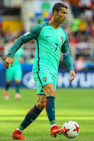

Cristiano Ronaldo has for years been the king of soccer. This year he received the world best award for the record tying 5th time. The protugese international has airports named after him and his statue in more than two countries. here are images, crowd reactions and a short compilation of what took him to the top
